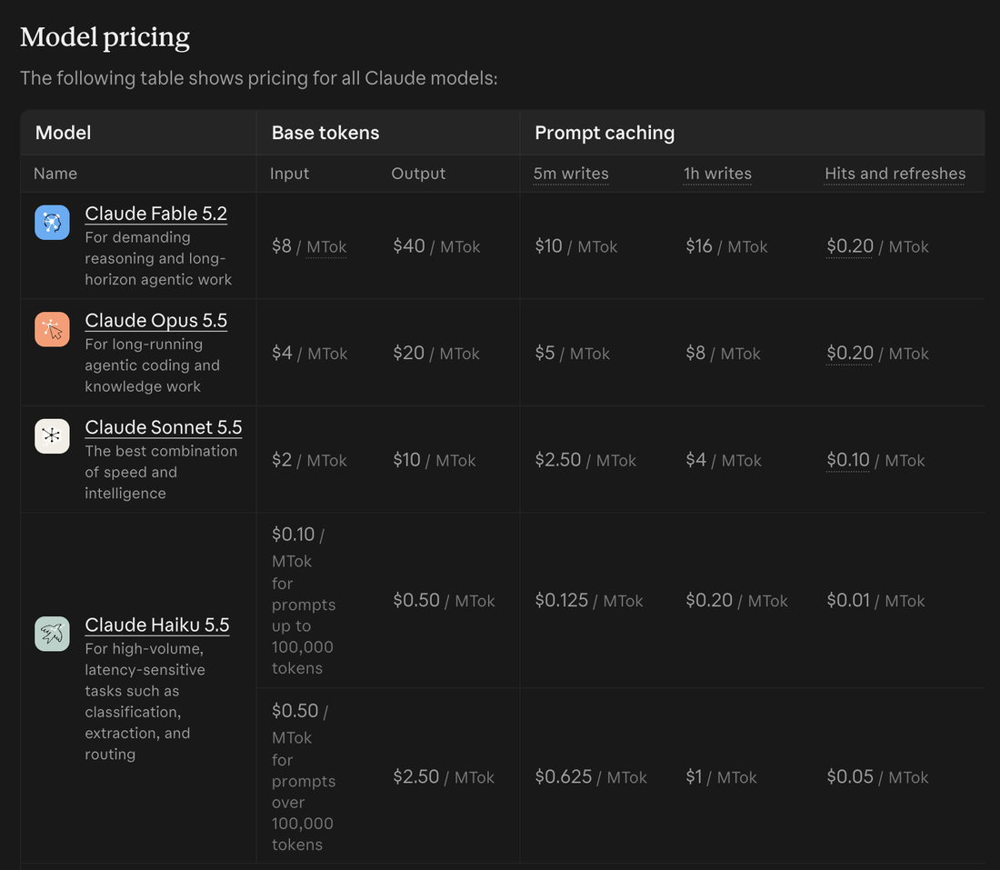
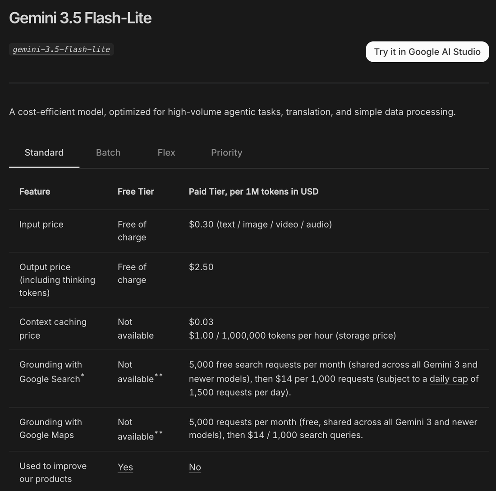

Sesión 2 · Bloque 2
Capacidades, límites y cómo elegir el modelo
Qué hace bien un LLM, por qué falla y cuánto cuesta. Y cómo elegir el modelo de tu proyecto.
60 minutos Club de lectura al final Después: Laboratorio 2B
Calidad¿Resuelve tu tarea?
CostoPor caso y por acierto
DatosQué hace el proveedor con ellos
Qué decir: en el bloque 2.1 vimos cómo funciona un LLM. Hoy vemos qué hace bien, por qué falla y cómo elegir uno.
Las tres capas de la derecha son los criterios para elegir: calidad, costo y datos.
Minuto acumulado: 0.5 de 60.
Apertura
Del Laboratorio 2A a este bloque
Hecho verificable Capacidades y alucinaciones
Premisa falsa Plausible, pero falso
Fuera de alcance Adivinar o decir «no lo sé»
Posterior a la fecha de corte La fecha de corte
Cada tipo de pregunta del laboratorio tiene su explicación en este bloque.
Qué decir: en el Laboratorio 2A hicieron cuatro tipos de pregunta. Hoy vemos qué hay detrás de cada uno.
Clic 1 a 4: cada tipo y la parte del bloque que lo explica.
No uses cifras del laboratorio: cada grupo obtuvo las suyas.
Minuto acumulado: 1 de 60.
Parte 1 · Capacidades
Generar: cuatro tareas del mundo tech
Resumir Un hilo largo de un reporte en GitHub
→ los puntos clave y el estado
Explicar Un mensaje de error de Python
→ qué significa y qué revisar
Traducir Documentación técnica en inglés
→ español, sin cambiar los nombres del código
Escribir código Una función de Python
→ su prueba unitaria
Las cuatro parten de un texto que le das. El modelo lo transforma.
Qué decir: esto es lo que un LLM hace bien hoy, con ejemplos del trabajo con software.
Clic 1 a 4: resumir, explicar, traducir y escribir código.
Clic 5: las cuatro tareas parten de un texto que le das. Cuando la respuesta no está en ese texto, aumenta el riesgo de error. Lo vemos en la parte 2.
Minuto acumulado: 3 de 60.
Parte 1 · Capacidades
Razonar antes de responder
Precios: Anexo G.1 del curso. Cobro del razonamiento: documentación de Anthropic y de Google , 23 de noviembre de 2026.
Qué decir: algunos modelos escriben sus pasos antes de responder. Se llaman modelos que razonan.
Clic 1: primero generan tokens de razonamiento. Aquí, la cuenta del costo de un laboratorio.
Clic 2: después escriben la respuesta, que es lo único que ves.
Clic 3: los tokens de razonamiento se cobran como salida. Razonar mejora muchas respuestas, pero cuesta más.
Anthropic: «the tokens Claude spends reasoning are billed as output tokens». Google cobra igual: salida más razonamiento.
En Haiku 5.5 el razonamiento está activo por defecto, y no ves su texto. Igual lo pagas.
La cuenta es real: con los precios del Anexo G.1, un laboratorio cuesta USD 0.0225. Los conteos de tokens son ilustrativos.
Dato del Anexo G.1: el curso graba las respuestas de Haiku 5.5 con el razonamiento desactivado.
Minuto acumulado: 5 de 60.
Parte 1 · Capacidades · Una medida con fecha y método
Tareas cada vez más largas
Datos: METR (2026, 20 de noviembre) , figura 10, suites TH1.1 y TH2. Licencia CC BY. Gráfico propio.
Qué decir: ¿cuánto mejoran los modelos? METR mide el horizonte de tiempo de las tareas que completan.
Es la duración de una tarea que un agente completa con 50 % de éxito. La duración la marca un experto humano.
No es el tiempo que tarda la IA. Mide qué tan difícil es la tarea.
Clic 1: cada punto es un modelo. GPT-4o, de mayo de 2024: 7 minutos. GPT-6 Astra, de septiembre de 2026: unas 40 horas.
Clic 2: la tendencia se duplica cada 3.6 meses, con un intervalo de 2.1 a 4.9 meses.
Clic 3: la incertidumbre de los modelos nuevos es enorme. GPT-6 Astra va de 13 a 2 645 horas.
Las tareas son de software. Para tu proyecto cuenta tu tarea: tus diez casos.
Una crítica: Nguyen y Fithian (2026) advierten que no todos los saltos de diez veces son igual de difíciles.
Minuto acumulado: 7 de 60.
Por qué alucina: elige lo plausible, no lo verdadero
1. Probabilidades El decoder da una probabilidad a cada token. Lo vimos en el bloque 2.1.
2. Lo plausible Se elige un token que encaja con los patrones de sus pesos.
3. Sin fuente Nada comprueba que sea verdad. El modelo no consulta una fuente.
Una alucinación es una respuesta plausible, pero falsa.
Qué decir: el mapa del bloque 2.1 explica las alucinaciones. El modelo elige tokens probables.
Clic 1 a 3: probabilidades, lo plausible y la falta de una fuente.
La definición sigue a OpenAI (2025): «declaraciones verosímiles pero falsas».
Minuto acumulado: 8 de 60.
Parte 2 · Límites · Animación
Plausible, pero falso: un paquete que no existe
Spracklen et al. (2025), USENIX Security . Lanyado (2024), Lasso Security . Commit de Alibaba .
Qué decir: un caso real del mundo tech. Un modelo recomendó instalar un paquete que no existía.
Clic 1: la pregunta de un desarrollador. Los tres comandos parecen razonables. Las probabilidades son ilustrativas.
Clic 2: el más probable, «pip install huggingface-cli», no existía. «huggingface-cli» era el nombre del comando, no del paquete.
En 2024, la documentación de Hugging Face lo instalaba con «pip install -U "huggingface_hub[cli]"». Hoy la herramienta se llama hf.
Clic 3: Spracklen et al. (2025) generaron 576 000 programas con 16 modelos.
En promedio, 5.2 % de los paquetes de los modelos GPT no existían. En los de código abierto, 21.7 %.
El 43 % de los paquetes inventados se repitió en las diez repeticiones de la misma pregunta. Por eso se pueden predecir.
Una réplica de 2026, sin revisión por pares todavía, encuentra tasas menores, de 3.6 a 5.0 %.
Clic 4: un investigador de Lasso Security registró ese nombre con un paquete vacío. Tuvo más de 30 000 descargas en tres meses.
El README de un proyecto de Alibaba lo instalaba. Alibaba lo corrigió el 29 de marzo de 2024.
Lección: revisa todo nombre de paquete que proponga un modelo antes de instalarlo.
Minuto acumulado: 10.5 de 60.
Parte 2 · Límites · Un caso que ya viste
Cuando el error llega a los usuarios
Abril de 2025: el bot de soporte de Cursor, un editor de código con IA, inventó una política.
Dijo que una suscripción servía en un solo dispositivo. No era cierto.
«Apologies - something very clearly went wrong here»Cofundador de Cursor, Hacker News, 15 de abril de 2025
Caso de la sesión 1. Hacker News, 15 de abril de 2025 . Logotipo: Cursor .
Qué decir: lo vimos en la sesión 1. Una respuesta plausible y falsa llegó a los clientes.
Desde entonces, las respuestas de soporte hechas con IA van marcadas.
Lección para el proyecto: un agente que responde a personas necesita pruebas de robustez.
Minuto acumulado: 11.5 de 60.
Parte 2 · Límites · Animación
Adivinar o decir «no lo sé»
OpenAI (2025, 5 de septiembre), «Por qué los modelos de lenguaje alucinan» . La tabla de SimpleQA sale de la ficha del sistema de GPT-5.
Qué decir: la lectura de hoy explica por qué los modelos adivinan. Lo seguimos tal como lo cuenta.
Clic 1: en una prueba de opciones múltiples, adivinar puede sumar puntos. En blanco, cero seguro.
Clic 2: el ejemplo del cumpleaños. Adivinar «10 de septiembre» acierta 1 vez de cada 365.
Clic 3: datos reales de SimpleQA, una prueba de preguntas de hechos, sin búsqueda web. o4-mini acierta un poco más, 24 % contra 22 %.
Pero o4-mini se equivoca en 75 % de las preguntas. gpt-5-thinking-mini se abstiene en 52 % y se equivoca en 26 %.
Clic 4: la propuesta del artículo. Castigar más un error seguro que la duda, y dar crédito parcial a la incertidumbre.
El ejemplo de puntajes sale del artículo de investigación (Kalai et al., 2025, p. 13): con un umbral de 50 %, un error resta 1 punto.
No respondas las preguntas del club: allí se aplican estas ideas al proyecto de cada grupo.
Minuto acumulado: 14 de 60.
Parte 2 · Límites · Sesgos
Los vectores aprenden los sesgos del texto
Cálculo propio con los pesos de GPT-2 pequeño (ejemplos/sesgo_gpt2.py), con la idea de Bolukbasi et al. (2016) , NeurIPS.
Qué decir: los vectores aprenden del texto, también sus estereotipos.
Bolukbasi et al. (2016) lo mostraron con word2vec de Google News. El título del artículo lo resume: «Man is to Computer Programmer as Woman is to Homemaker?».
Clic 1: con los pesos reales de GPT-2, armamos la dirección she − he con siete pares de palabras.
Clic 2: cada profesión cae en algún punto. Nadie lo programó: sale del texto de entrenamiento.
Clic 3: nurse, dancer y secretary quedan del lado de she. Architect, captain y engineer, del lado de he.
En Bolukbasi et al., nurse también quedó en el extremo de she, y architect y captain en el de he.
Un matiz: Nissim et al. (2020) muestran que las analogías pueden exagerar el sesgo. Que el sesgo existe, lo aceptan.
Para tu proyecto: si tu agente clasifica o recomienda sobre personas, prueba casos que crucen grupos.
Minuto acumulado: 16.5 de 60.
Parte 2 · Límites · Animación
La fecha de corte: los pesos no saben lo que pasó después
Claude Haiku 5.5: corte de los datos de entrenamiento en junio de 2026 y lanzamiento el 7 de octubre de 2026 (Anthropic ). langchain 1.5.0: PyPI .
Qué decir: los pesos se congelan al final del entrenamiento. Lo vimos en el bloque 2.1.
Clic 1: el corte de los datos de entrenamiento de Claude Haiku 5.5 es junio de 2026.
Clic 2: el modelo salió el 7 de octubre de 2026, unos cuatro meses después.
Clic 3: langchain 1.5.0 salió el 11 de noviembre de 2026. Por ejemplo, dejó de funcionar con Python 3.10.
Clic 4: si preguntas qué cambió en esa versión, el modelo no lo sabe. Puede inventar una respuesta plausible.
Es el tipo de pregunta «posterior a la fecha de corte» del Laboratorio 2A.
La solución es darle la información: con herramientas o en el contexto. Lo vemos en las sesiones 5 y 6.
Anthropic publica dos cortes: el de los datos y el del conocimiento confiable. Para Haiku 5.5, los dos son junio de 2026.
Minuto acumulado: 19 de 60.
Parte 3 · Modelos y proveedores
¿Dónde están los pesos?
Tamaños de Olmo 3 7B: archivos en Hugging Face y cálculo del bloque 2.1.
Qué decir: en el bloque 2.1 vimos que un LLM son tres cosas. Los pesos viven en algún computador.
Clic 1: detrás de una API. Tu programa envía el texto por internet a los servidores del proveedor.
Clic 2: en tu computador. Descargas los pesos y el texto no sale de tu máquina.
Clic 3: con una API, tus datos salen de tu computador. La parte 5 muestra qué hace cada proveedor con ellos.
Minuto acumulado: 21 de 60.
Parte 3 · Modelos y proveedores
Pesos abiertos no es lo mismo que código abierto
Modelo Pesos Licencia Datos de entrenamiento Olmo 3 (Ai2, 2025) se descargan Apache 2.0 publicados (Dolma 3) gpt-oss (OpenAI, 2025) se descargan Apache 2.0 descritos, no publicados Qwen3 (Alibaba, 2025) se descargan Apache 2.0 descritos, no publicados Llama 3.1 (Meta, 2024) se descargan propia: más de 700 millones de usuarios exige permiso no publicados Claude y Gemini solo por API términos del proveedor no publicados
«“Open Source models” and “Open Source weights” must include the data information and code used to derive those parameters.»Open Source AI Definition 1.0, Open Source Initiative (2024)
Fichas y licencias de Olmo 3 , gpt-oss , Qwen3 y Llama 3.1 . OSAID 1.0 . Consulta: 23 de noviembre de 2026.
Qué decir: un modelo de pesos abiertos se puede descargar. No por eso es de código abierto.
Clic 1: Olmo 3 publica pesos, código y datos. Es el caso más abierto de la tabla.
Clic 2 y 3: gpt-oss y Qwen3 publican sus pesos con Apache 2.0, una licencia permisiva. Describen sus datos, pero no los publican.
Clic 4: Llama 3.1 tiene una licencia propia. Si tu producto supera 700 millones de usuarios activos al mes, necesitas permiso de Meta.
Esa licencia también exige mostrar «Built with Llama» y cumplir una política de uso aceptable. La OSI dice que Llama no es de código abierto.
Clic 5: Claude y Gemini no publican sus pesos. Solo se usan por API, con los términos del proveedor.
Clic 6: la definición de la OSI pide más que los pesos. Pide la información de los datos y el código que los produjo.
Para el proyecto: la licencia dice qué puedes hacer con el modelo. Revísala antes de elegir.
Minuto acumulado: 23.5 de 60.
Parte 3 · Modelos y proveedores
Cómo elegir un modelo: cuatro criterios
Calidad en tu tarea Con tus casos, no con un benchmark general.
Costo y latencia Cuánto cuesta cada acierto y cuánto tarda.
Ventana de contexto Cuántos tokens caben en una llamada.
Datos y licencia Qué hace el proveedor con tus datos y qué permite la licencia.
Un benchmark general mide otras tareas. Tus diez casos miden la tuya.
Qué decir: no hay un mejor modelo en general. Hay un mejor modelo para tu tarea.
Clic 1 a 4: calidad en tu tarea, costo y latencia, ventana de contexto, y datos y licencia.
La ventana de contexto es el número máximo de tokens que el modelo lee en una llamada.
Minuto acumulado: 25.5 de 60.
Parte 3 · Modelos y proveedores
Los modelos del curso
Claude Haiku 5.5 Gemini 2.5 Flash-Lite Gemini 3.5 Flash-Lite Proveedor Anthropic Google Google USD por millón de tokens (entrada / salida) 0.10 / 0.50 * 0.10 / 0.40 0.30 / 2.50 Ventana de contexto 1 millón de tokens 1 048 576 tokens 1 048 576 tokens Fecha de corte junio de 2026 enero de 2025 marzo de 2026 ** Lanzamiento 7 de octubre de 2026 22 de julio de 2025 21 de julio de 2026
* Con prompts de hasta 100 000 tokens; por encima, 0.50 / 2.50. ** En algunos temas, solo hasta enero de 2025.
Aviso. Desde el 18 de septiembre de 2026, Google limita Gemini 2.5 Flash-Lite a quien ya lo usaba. Para proyectos nuevos recomienda 3.5 Flash-Lite.
Anthropic: ficha de Claude Haiku 5.5 . Google: fichas de los modelos y model card de 3.5 Flash-Lite . Consulta: 23 de noviembre de 2026.
Qué decir: el curso usa Claude Haiku 5.5 o Gemini (Anexo G.1). Estos son sus datos, en sus fuentes oficiales.
Fíjate en la fecha de corte: Gemini 2.5 Flash-Lite no sabe nada posterior a enero de 2025.
Aviso importante: desde el 18 de septiembre de 2026, Google solo deja usar 2.5 Flash-Lite a quien ya lo usaba. Una cuenta nueva podría no tener acceso.
Dos detalles para los laboratorios: Haiku 5.5 no acepta el parámetro de temperatura, y su razonamiento está activo por defecto.
Minuto acumulado: 27 de 60.
Parte 4 · Costo · Animación
La cuenta: cuánto cuesta un caso
Precios y supuesto de un laboratorio: Anexo G.1 del curso. Tokens en español: conteo propio del bloque 2.1.
Qué decir: el costo se cuenta en tokens de entrada y de salida, cada uno con su precio.
Clic 1: 2 000 tokens de entrada por USD 0.10 el millón: USD 0.0002.
Clic 2: 500 tokens de salida por USD 0.50 el millón: USD 0.00025. El caso cuesta USD 0.00045.
Clic 3: con 50 llamadas, un laboratorio cuesta USD 0.0225 por estudiante.
Clic 4: el tokenizer decide cuántos tokens pagas. Lo vimos en la parte 1 del bloque 2.1.
Fuente: Anexo G.1 del curso, con precios de la página oficial de Anthropic.
Minuto acumulado: 30 de 60.
Parte 4 · Costo · Animación
El costo que importa: el costo por acierto
Qué decir: el costo por caso no basta. Importa cuánto cuesta cada respuesta correcta.
Clic 1: el modelo A cuesta menos por caso.
Clic 2: pero resuelve 4 de 10 casos. El modelo B resuelve 9.
Clic 3: costo por acierto es el costo total entre los casos bien resueltos.
Clic 4: el modelo barato que falla cuesta más por acierto. El Laboratorio 2B lo mide.
Los precios y los aciertos de esta animación son ilustrativos.
Minuto acumulado: 32.5 de 60.
Parte 4 · Costo
Los precios: la salida cuesta más que la entrada
Método. Plan pagado, entrada de texto. Haiku 5.5 con prompts de hasta 100 000 tokens. Laboratorio: 50 llamadas de 2 000 tokens de entrada y 500 de salida (Anexo G.1).
Páginas oficiales de precios de Anthropic y de Google , 23 de noviembre de 2026.
Qué decir: estos son los precios por millón de tokens. La escala es logarítmica: cada marca vale diez veces la anterior.
Clic 1: el costo de un laboratorio por estudiante. Haiku 5.5: USD 0.0225. Gemini 2.5 Flash-Lite: USD 0.02. Gemini 3.5 Flash-Lite: USD 0.0925.
Clic 2: Claude Opus 5.5, un modelo grande, cuesta 40 veces más que Haiku 5.5. El mismo laboratorio costaría USD 0.90 por estudiante.
Para la mayoría de las tareas del curso, un modelo pequeño basta. Los diez casos lo comprueban.
Dato: el modelo grande de Google es Gemini 4 Carbon. Cuesta 2 / 10 hasta el 30 de noviembre de 2026, y 4 / 20 después.
Abajo hay una diapositiva de consulta con las capturas de las dos páginas de precios.
Minuto acumulado: 35 de 60.
Consulta
Las páginas oficiales de precios

Anthropic: precios por millón de tokens. 
Google: Gemini 3.5 Flash-Lite, gratuito y pagado.
Capturas del 23 de noviembre de 2026: platform.claude.com y aistudio.google.com .
Diapositiva de consulta, sin tiempo de clase.
Parte 5 · Los datos según el plan
Qué hace cada proveedor con lo que le envías
Proveedor y plan ¿Usa tus datos para mejorar sus productos? ¿Revisión humana? ¿Cuánto los guarda? Sí Sí, pueden leerlos Los términos no fijan plazo No Solo lo marcado como abuso 55 días, para detectar abusos No, salvo que lo autorices Solo para revisar abusos Hasta 30 días No, salvo que lo autorices Revisión de seguridad Borra entradas y salidas en 30 días
«Do not submit sensitive, confidential, or personal information to the Unpaid Services.»Google, términos adicionales de la API de Gemini, vigentes desde el 23 de marzo de 2026
Google: términos de la API de Gemini . OpenAI: «Your data» . Anthropic: centro de privacidad . Consulta: 23 de noviembre de 2026.
Qué decir: cuando usas una API, tus datos salen de tu computador. Esto hace cada proveedor con ellos.
Clic 1: en la API gratuita de Gemini, Google usa lo que envías para mejorar sus productos, y personas pueden leerlo.
Clic 2: en la API pagada, no lo usa para mejorar productos. Pagada significa un proyecto de Cloud con facturación activa, no solo una clave.
Google guarda 55 días los datos para detectar abusos. Y exige tener 18 años o más para usar sus APIs.
Clic 3: OpenAI no entrena con los datos de la API desde marzo de 2023, salvo que lo autorices. Los guarda hasta 30 días.
Clic 4: Anthropic no entrena con los datos de la API por defecto, y borra entradas y salidas en 30 días.
Excepción: el contenido marcado como abuso puede guardarse hasta 2 años. Los tres ofrecen retención cero solo con aprobación.
Clic 5: la frase de Google es la regla del curso, dicha por el proveedor.
Minuto acumulado: 38 de 60.
Parte 5 · Los datos según el plan
La regla del curso: ningún dato personal real entra a un modelo
Ley 1581 de 2012
Dato personal: «Cualquier información vinculada o que pueda asociarse a una o varias personas naturales determinadas o determinables» (art. 3).
Tratarlo exige la autorización previa e informada del titular (art. 9).
Circular Externa 002 de 2024, SIC
Lineamientos sobre el tratamiento de datos personales en sistemas de inteligencia artificial.
«La información personal que es “accesible al público” no es, per se, información “de naturaleza pública”».
En el proyecto: datos sintéticos o anonimizados. Los que genera un LLM se revisan antes de usarlos.
Ley Estatutaria 1581 de 2012 . Circular Externa 002 del 21 de agosto de 2024 , Superintendencia de Industria y Comercio.
Qué decir: la regla del curso tiene base legal en Colombia.
Clic 1: la Ley 1581 de 2012 define el dato personal. Tratarlo exige la autorización del titular.
Clic 2: la SIC aplicó esa ley a la inteligencia artificial en 2024. Un dato en internet no es por eso público.
La circular también pide un estudio de impacto de privacidad antes de diseñar sistemas de alto riesgo. Lo vemos en la sesión 7.
Clic 3: en el proyecto usan datos sintéticos o anonimizados. Los datos que genera un LLM pueden repetir datos reales que vio (Anexo C.7).
Minuto acumulado: 40 de 60.
Parte 6 · La capa 1, parte 2
Las pruebas de la capa 1
Qué decir: esta es la consigna de la capa 1. Usan los casos que escribieron después del bloque 2.1.
Clic 1: los diez casos en dos modelos, con la clave del curso.
Clic 2: los tres casos de robustez, en los mismos modelos.
Clic 3: la consistencia. Tres casos, tres veces cada uno, en cada modelo.
Clic 4: cada prueba deja una fila en la tabla de resultados de la ficha.
En total son 44 pruebas. No es una clase de evaluación: los laboratorios enseñan a hacerlas.
Minuto acumulado: 43.5 de 60.
Parte 6 · La capa 1, parte 2
Cómo elegir el modelo de tu proyecto
Criterio Modelo 1 Modelo 2 Cómo se mide Calidad en los diez casos ? ? Aciertos y pass^k Costo por acierto ? ? Costo total entre aciertos Latencia ? ? Segundos por respuesta Tratamiento de los datos ? ? Plan y política del proveedor
Escriban en la ficha el modelo elegido y la razón, con estos cuatro criterios.
Qué decir: con los resultados de las pruebas, el grupo elige su modelo.
Clic 1 a 4: los cuatro criterios y cómo se mide cada uno.
pass^k es la proporción de casos que aciertan en todos los intentos (Anexo J.6).
Clic 5: la razón va en la sección 1 de la ficha del agente.
Minuto acumulado: 46.5 de 60.
Parte 6 · La capa 1, parte 2
Cómo trabajar sin riesgos
La clave vive en un archivo .env
# .env: nunca va en el código ni se publica
ANTHROPIC_API_KEY=…
GOOGLE_API_KEY=…
# .gitignore
.env
Graben las respuestas Mientras desarrollan, trabajen con respuestas grabadas. No gastan crédito.
Datos sintéticos o anonimizados Los que genera un LLM se revisan antes de usarlos: pueden repetir datos reales.
Qué decir: tres reglas para trabajar con la clave del curso.
Clic 1: la clave vive en un archivo .env y el archivo .gitignore impide subirlo. Nunca va en el código (Anexo A.7).
Conviene fijar un límite de gasto en la consola del proveedor.
Clic 2: mientras desarrollan, graben respuestas y trabajen con ellas, como en los laboratorios (Anexo C.1).
Clic 3: datos sintéticos o anonimizados. Los que genera un LLM se revisan: pueden reproducir datos reales que vio (Anexo C.7).
Minuto acumulado: 49.5 de 60.
Parte 6 · La capa 1, parte 2
Qué entregas: la sección 1 de la ficha del agente
5 %
de la calificación del curso
Al inicio del bloque 3.1. En Word o en Markdown.
Funciona según su criterio de éxito 40 %
Las pruebas están completas y corridas 40 %
La ficha está al día 20 %
Qué decir: la entrega es la sección 1 de la ficha del agente, al inicio del bloque 3.1.
Clic 1 a 3: los criterios del Anexo D. Funciona, pruebas completas y ficha al día.
La plantilla está en el índice de la sesión, en Word y en Markdown.
Minuto acumulado: 52 de 60.
Cierre
La sesión 2 en tres ideas
1 Cómo funciona Tokens, transformer y pesos que predicen el siguiente token.
2 Por qué falla Elige lo plausible, aprende sesgos y no sabe lo que pasó después del corte.
3 Cómo elegir Calidad en tus casos, costo por acierto y tratamiento de los datos.
Qué decir: la sesión 2 en tres ideas. Cómo funciona, por qué falla y cómo elegir.
Minuto acumulado: 53.5 de 60.
Cierre · Lectura del bloque 3.1
Para el próximo bloque: una lectura sobre prompting
Meincke, Mollick, Mollick y Shapiro (2025, 8 de junio)
Prompting Science Report 2: The Decreasing Value of Chain of Thought in Prompting . Wharton Generative AI Labs.
19 páginas: el cuerpo ocupa unas 8. Solo en inglés.
Un experimento: ¿ayuda pedirle a un modelo que razone paso a paso?
Las dos preguntas guía están en el trabajo independiente.
gail.wharton.upenn.edu · arXiv 2506.07142
Qué decir: la lectura del bloque 3.1 abre la sesión de prompting.
No adelantes sus resultados: se discuten en el club del bloque 3.1.
Minuto acumulado: 54 de 60.
Después del club · 60 minutos en clase
Laboratorio 2B: elegir el modelo
Practicas comparar varios modelos en la misma tarea, con reportes de errores de una app.Configuras la instrucción de la tarea, los modelos que comparas y el criterio de éxito.Mides la tasa de éxito, los tokens, el costo por caso, el costo por acierto y la latencia.
No escribes código a mano: lees, ejecutas y configuras.
Sin clave de API, el notebook usa respuestas grabadas. Con la clave del curso, corre en vivo.
El notebook trae sus pruebas de funcionamiento y de robustez.
Qué decir: después del club, el laboratorio. Dura 60 minutos en clase.
Es la práctica de la capa 1: el mismo código con distintos modelos, gracias a init_chat_model.
No muestres resultados: el laboratorio se hace en clase.
Fuente: Anexo B, Laboratorio 2B.
Minuto acumulado: 55 de 60.
Club de lectura · 5 minutos
Club de lectura: OpenAI (2025)
Lee la versión en español o el original en inglés .
¿Cuándo debe tu agente decir «no lo sé»? El artículo propone calificar distinto: castigar más un error seguro que una abstención. Piensa en la tarea de tu proyecto. ¿Qué error sería peor que no responder? ¿Cómo lo reflejarías en tus diez casos? Apóyate en la sección «Una mejor manera de calificar las evaluaciones».¿Qué datos de tu proyecto son difíciles de predecir? Según los autores, la ortografía sigue patrones, pero un dato como el cumpleaños de una mascota no. ¿Qué datos de tu tarea se parecen a ese cumpleaños? ¿Dónde los buscaría tu agente en lugar de adivinarlos? Apóyate en la sección sobre la predicción de la siguiente palabra.
Después del club: Laboratorio 2B.
Pregunta 1 y el Laboratorio 2A: recuerda las preguntas de premisa falsa y fuera de alcance. ¿El modelo se abstuvo o inventó?
Hilo para profundizar: en un agente de soporte, un error seguro puede ser peor que pedir ayuda a una persona.
Pregunta 2 y el Laboratorio 2A: recuerda las preguntas posteriores a la fecha de corte. El modelo no tenía cómo saberlas.
Hilo para profundizar: esos datos se buscan con herramientas o se ponen en el contexto. Lo vemos en las sesiones 5 y 6.
No respondas las preguntas: la respuesta es de los estudiantes.
Cierra con la transición: «Ahora elegimos un modelo con datos, en el Laboratorio 2B».
Minuto acumulado: 60 de 60.
Para profundizar
Referencias
OpenAI (2025, 5 de septiembre). Why language models hallucinate . Original · en español
Kalai, Nachum, Vempala y Zhang (2025). Why Language Models Hallucinate . arxiv.org
Spracklen et al. (2025). We Have a Package for You! USENIX Security. usenix.org
Lanyado, B. (2024, 28 de marzo). Diving Deeper into AI Package Hallucinations . Lasso Security. lasso.security
Bolukbasi et al. (2016). Man is to Computer Programmer as Woman is to Homemaker? Debiasing Word Embeddings . NeurIPS. neurips.cc
Nissim, van Noord y van der Goot (2020). Fair Is Better than Sensational . Computational Linguistics. aclanthology.org
METR (2026, 20 de noviembre). Q4 2026 capability update . metr.org · Kwa et al. (2025). arxiv.org
Open Source Initiative (2024). The Open Source AI Definition 1.0 . opensource.org
Licencias: Llama 3.1 · gpt-oss · Qwen3 · Olmo 3
Precios: Anthropic · Google . Modelos: Claude Haiku 5.5 · Gemini
Datos: Google · OpenAI · Anthropic
Colombia: Ley 1581 de 2012 · Circular Externa 002 de 2024 de la SIC
Meincke, Mollick, Mollick y Shapiro (2025). Prompting Science Report 2 . gail.wharton.upenn.edu
Huyen, C. (2024). AI Engineering , capítulos 1 y 2. O'Reilly. LangChain, documentación de modelos .
Referencias del bloque, sin tiempo de clase. Consulta: 23 de noviembre de 2026.